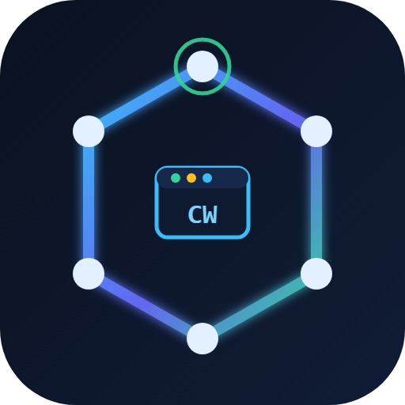

MARL-ECDSA把 ECDSA 签名存证、CW-PBFT 贡献加权共识与链上激励，融合进多智能体强化学习的奖励回路——并用完整披露的诚实负结果告诉你这套机制的边界在哪里。
每个智能体动作以 ECDSA（RFC6979 确定性 k）签名上链，身份去中心化锚定、无 CA；时间戳回拨 / Nonce 重放 / K 值重用由 SecurityGuard 三阶防护拦截。
基于 MARL 行为流导出贡献度权重，注入 CW-PBFT 投票权重与链上激励结算；安全条件 b < n/(2R+1) 给出可判定的设计边界。
全部对外数字登记在单一真值表（88 条），每条附数据源与分析口径；142 次原始运行随包发布，Welch 检验 / Cohen's d 可独立复算。
┌────────────────────────────────────────────────────────────────┐ │ 区块链激励层 CW-PBFT 贡献加权共识 · 智能合约激励结算 · 账本 │ │ ▲ 行为上链 / 贡献度反馈 │ 链上激励 λ │ │ ┌──────┴───────────────────────────────────────▼───────────┐ │ │ │ Bridge 编排器（4 子组件流水线） │ │ │ │ SigningService → ActionRecorder → CooperationDetector │ │ │ │ → SettlementCoordinator │ │ │ └──────┬───────────────────────────────────────▲───────────┘ │ │ │ 环境奖励 + λ·链上激励 │ 观测 / 签名 │ │ MARL 决策层 IQL / VDN / QMIX / MAPPO（CTDE）· SimpleSpread │ └────────────────────────────────────────────────────────────────┘ SecurityGuard 三阶防护：观测校验 → ECDSA 验签 → 重放检测
链上激励 λ 融合进环境奖励，塑形长期协作行为；贡献度权重随行为流动态更新。
每个动作 ECDSA 签名上链形成不可否认账本，行为序列驱动贡献度量化与共识投票。
与"统计合谋检测"路线不同：对观测伪造 / 消息篡改 / 重放 / 女巫 / K 值重用 / 长程攻击共 6 类 × 50 次 = 300 次攻击批量实证，全部被链上层拦截（每类 Wilson 95%CI 下界 ≥92.9%）。
给出 CW-PBFT 安全条件 b < n/(2R+1)；实测真实 MARL 权重 R≈1.007 时与标准 PBFT 等价——把这个等价性本身作为设计准则报告，而非回避。
88 条登记数字全部程序化取自原始数据、门禁自动复算；作废口径令牌化拦截。文档永远追不上事实的问题，用机器管。
| 维度 | 结果 | 真值源 |
|---|---|---|
| 主结局（末 50 回合 env_reward，不含 BC 激励） | +28.17%，n=71/组，p=0.0095，d=0.44（BH-FDR 显著 / Bonferroni 不显著） | NR-1 |
| 同数据全程口径（必须与主口径同报） | +7.92%，p<1e-10，d=1.20，检验力≈1.0 | NR-2 |
| 全程平均合作率 | +1.95%，p<1e-10 | NR-3 |
| 跨算法等样本量对照（各 n=30） | 仅 QMIX 显著（+5.23，p=0.015，d=0.648）；IQL/VDN/MAPPO 不显著 | NR-63~66 |
| 签名层攻击（6 类 × 50 次） | 100% 拦截，每类 Wilson 下界 ≥92.9% | NR-30 |
| 容错（40% 省略故障，n=16） | 共识成功率 0 → 97.3%（活性恢复，非任意对手安全界） | NR-38 |
| 签名开销（每步真实 ECDSA） | 签名 0.036ms / 验签 0.079ms；端到端 1.527×（上界口径） | NR-89~93 |
| 真实 TCP 部署 | 单机回环 3/4/5 节点全通过；跨 2 物理主机 4 节点 + TLS 通过 | NR-94/95 |
| 工程规模 | 1600+ 项测试全部通过（0 失败，下限式） | NR-19 |
运行：
marlecdsa-dashboard.exe → 自动打开 http://127.0.0.1:9090（10 个标签页：总览 / 训练监控 / 对比分析 / 区块链 / 共识投票 / 区块浏览器 / 攻防演示 / P2P 网络…，按 P 进入演示模式）
本项目为科研与教学演示用途；共识机制为演示级实现（自签名 ECDSA，未接 CA/PKI），实验环境为 SimpleSpread 基准与受控部署场景，不构成生产区块链系统的安全承诺。
页面所列全部数字来自随源码发布的 number_registry.json（88 条登记，含数据源、统计口径与复算脚本）；原始运行数据 142 次 JSON 随包发布。
CCF 区块链大赛 · 参赛方向：区块链数据安全。本页为项目公开介绍页，评审材料以官方提交件为准。